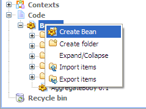
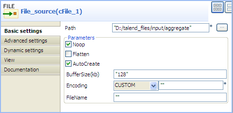
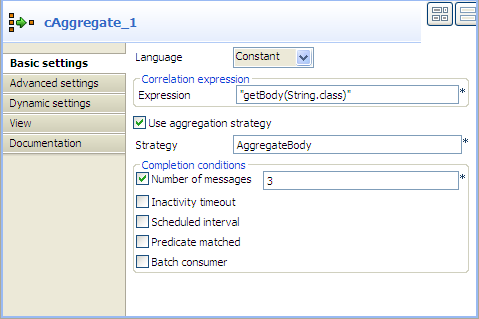
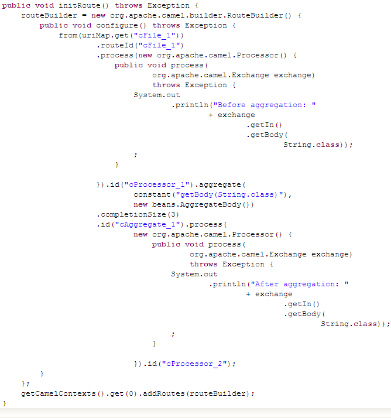
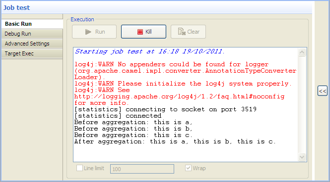

|
Famille de composant |
Routing | |
|
Fonction |
Le composant cAggregate agrège des messages selon des conditions spécifiées. | |
|
Objectif |
Le cAggregate vous permet de combiner un certain nombre de messages en un seul message. | |
|
Basic settings
|
Language | Sélectionnez le langage de l'expression que vous souhaitez utiliser pour filtrer vos messages, entre Constant, EL, Groovy, Header, Javascript, JoSQL, JXPath, MVEL, None, OGNL, PHP, Property, Python, Ruby, Simple, SpEL, SQL, XPath, et XQuery. |
|
Correlation expression/Expression |
Saisissez l'expression évaluant la clé de corrélation à utiliser pour l'agrégation. | |
| Strategy | Spécifiez un bean Java à utiliser comme stratégie d'agrégation. | |
| Completion conditions/Number of messages | Cochez cette case pour spécifier le nombre de messages à agréger par lot avant que l'opération d'agrégation soit complète. NoteCette case est cochée par défaut et le nombre de messages est défini à 3. Si vous décochez cette case et qu'au moins l'une des quatre autres conditions de complétion est rencontrée, tous les messages récupérés sont agrégés en un lot. | |
| Completion conditions/Inactivity timeout (in milliseconds) |
Cochez cette case pour spécifier la durée (en millisecondes) qu'un échange agrégé doit rester inactif pour être complet. Cette option peut être définie soit comme une valeur fixe soit à l'aide d'une Expression qui vous permet d'évaluer dynamiquement le délai avant suspension. NoteVous ne pouvez utiliser cette option avec Scheduled interval. Une seule d'entre elles peut être utilisée à la fois. | |
| Completion conditions/Scheduled interval (in milliseconds) |
Cochez cette case pour spécifier un intervalle de temps (en millisecondes) à la fin duquel les échanges de messages seront agrégés. NoteVous ne pouvez utiliser cette option avec Inactivity timeout. Une seule d'entre elles peut être utilisée à la fois. | |
| Completion conditions/Predicate matched | Cochez cette case pour spécifier un prédicat à indiquer lorsqu'un échange agrégé est terminé. | |
| Completion conditions/Batch consumer | Cochez cette case pour agréger tous les fichiers consommés à partir de l'endpoint de fichiers à l'emplacement spécifié. | |
| Advanced settings | Check completion before aggregating | Cochez cette case afin de vérifier la complétion lorsqu'un nouvel échange entrant est reçu. Cette option influence le comportement de l'option Predicate matched car l'échange passé change. Lorsque cette option est désactivée, l'échange passé dans le prédicat est l'échange aggregated, ce qui signifie que toute information stockée dans l'échange agrégé par la stratégie d'agrégation est disponible pour le prédicat. Lorsque cette option est activée, l'échange passé dans le prédicat est l'échange incoming, ce qui signifie que vous pouvez accéder aux données de l'échange entrant. |
| Close correlation group | Cochez cette case pour indiquer qu'une clé de corrélation à déjà été complétée. Tout échange ayant la même clé de corrélation sera refusé. lorsque vous utilisez cette option, saisissez un nombre dans le champ Maximum bound afin de n'avoir qu'un nombre fermé de clés de corrélation. | |
| Ignore invalid correlation key | Cochez cette case pour ignorer une clé de corrélation invalide ne pouvant être évaluée comme une valeur. Par défaut Camel va retourner une Exception lorsqu'il rencontre une clé de corrélation invalide. | |
| Group arriving exchange | Cochez cette case pour grouper tous les échanges agrégés en un seul objet contenant tous les échanges agrégés. Un seul message Exchange est envoyé depuis l'Aggregator. Cette option peut être utilisée pour combiner plusieurs messages de type Exchange entrants en un seul message Exchange de sortie. | |
| Use persistence | Cochez cette case pour sélectionner votre propre implémentation du référentiel conservant une trace des échanges agrégés en cours d'agrégation. Par défaut, Camel utilise une implémentation basée mémoire. | |
| Repository | Ce champ apparaît lorsque la case Use persistence est cochée. Le référentiel peut être AggregationRepository, HawtDBAggregationRepository, ou RecoverableAggregationRepository. | |
| AggregationRepository : Le référentiel par défaut utilisé par Camel est une implémentation basée mémoire. Saisissez le nom du référentiel dans le champ. | ||
|
HawtDBAggregationRepository : HawtDBAggregationRepository est un AggregationRepository faisant persister les messages agrégés à la volée. Cela vous assure de ne pas perdre vos messages. Avec ce référentiel sélectionné, les options suivantes apparaissent : Use persistent file : Cochez cette case pour stocker les échanges agrégés dans un fichier. Saisissez le nom du fichier pour le stockage persistant dans le champ Persistent file. Si le fichier n'existe pas, il sera créé. Recovery/Use recovery : Cochez cette case pour récupérer les échanges agrégés ayant échoué et les soumettre à nouveau automatiquement. Dans le champ Recovery interval, saisissez l'intervalle (en millisecondes) de temps au bout duquel chercher les échanges échoués à reprendre et à soumettre à nouveau. Cet intervalle est par défaut de 5000 millisecondes. Dans le champ Dead letter channel, saisissez une URI d'endpoint pour un canal des messages perdus dans lequel tous les messages Exchange récupérés seront déplacés. Dans le champ Maximum redeliveries, saisissez le nombre maximal de tentatives de livraison pour un échange récupéré. | ||
|
RecoverableAggregationRepository : RecoverableAggregationRepository est un JDBC basé sur un AggregationRepository faisant persister les messages agrégés à la volée. Cela vous assure de ne pas perdre vos messages. Saisissez le nom du référentiel dans le champ. En sélectionnant ce référentiel, les options suivantes apparaissent : Recovery/Use recovery : Cochez cette case pour récupérer les échanges agrégés ayant échoué et les soumettre à nouveau automatiquement. Dans le champ Recovery interval, saisissez l'intervalle (en millisecondes) de temps au bout duquel chercher les échanges échoués à reprendre et à soumettre à nouveau. Cet intervalle est par défaut de 5000 millisecondes. Dans le champ Dead letter channel, saisissez une URI d'endpoint pour un canal des messages perdus dans lequel tous les messages Exchange récupérés seront déplacés. Dans le champ Maximum redeliveries, saisissez le nombre maximal de tentatives de livraison pour un échange récupéré. | ||
|
Utilisation |
Le composant cAggregate peut être utilisé comme composant de milieu ou de fin dans une Route. | |
| Connections | Aggregate | Sélectionnez ce lien pour router des messages vers l'endpoint suivant, selon la stratégie d'agrégation sélectionnée. |
| Route | Sélectionnez ce lien pour router tous les messages de l'émetteur vers l'endpoint suivant. | |
| Limitation | n/a | |
Dans ce scénario, le composant cAggregate combine trois messages du système de fichiers local en un seul et affiche les messages dans la console. Un bean Java est utilisé comme stratégie d'agrégation.
Pour agréger les messages, utilisez un bean Java qui vous permet de construire une stratégie d'agrégation.
Dans la vue Repository, développez le nœud Code et cliquez-droit sur le nœud Beans. Dans le menu contextuel, sélectionnez Create Bean.
L'assistant [New Bean] s'ouvre. Dans le champ Name, saisissez un nom pour le bean, par exemple AggregateBody. Cliquez sur Finish pour fermer l'assistant.

Saisissez les codes comme ci-dessous. Dans ce scénario, agrégez tous les message en un seul.
package beans; import org.apache.camel.Exchange; import org.apache.camel.processor.aggregate.AggregationStrategy; public class AggregateBody implements AggregationStrategy{ public Exchange aggregate(Exchange oldEx, Exchange newEx) { if(oldEx==null){ return newEx; } String oldBody = oldEx.getIn().getBody(String.class); String newBody = newEx.getIn().getBody(String.class); newEx.getIn().setBody(oldBody+newBody); return newEx; } }Appuyez sur Ctrl+S pour sauvegarder votre bean.

Dans la Palette, développez le dossier Messaging. Sélectionnez le composant cFile et déposez-le dans l'espace de modélisation graphique.
Développez le dossier Routing. Sélectionnez le composant cAggregate et déposez-le dans l'espace de modélisation graphique.
Développez le dossier Processor. Sélectionnez deux composants cProcessor et déposez-les dans l'espace de modélisation graphique.
Cliquez-droit sur le composant cFile, sélectionnez Row > Route dans le menu contextuel et cliquez sur le premier composant cProcessor.
Répétez cette opération pour connecter le premier cProcessor au composant cAggregate.
Cliquez-droit sur le composant cAggregate, sélectionnez Row > Aggregate dans le menu contextuel et cliquez sur le second cProcessor.
Renommez tous les composants, si vous le souhaitez, afin de mieux identifier leur fonctionnalité, comme dans la capture d'écran ci-dessus.
Double-cliquez sur le cFile nommé File_source, pour afficher sa vue Basic settings dans l'onglet Component.
Dans le champ Path, parcourez votre système ou saisissez le chemin d'accès à votre fichier d'entrée. Laissez les autres champs tels qu'ils sont.
Dans ce scénario, quatre fichiers texte se trouvent dans le répertoire spécifié : a.txt, b.txt, c.txt et d.txt. Ils contiennent respectivement la phrase suivante This is a! , This is b! , This is c! et This is d! .
Double-cliquez sur le composant cAggregate nommé Aggregator, pour afficher sa vue Basic settings dans l'onglet Component.
Dans le champ Language, sélectionnez Constant ou Simple comme langage d'expression.
Dans le champ Expression, saisissez l'expression
"getBody(String.class)"pour récupérer le corps du message.Dans le champ Strategy, saisissez le nom du bean Java AggregateBody que vous avez créé.
Cochez la case Number of messages et saisissez 2 dans le champ.
Double-cliquez sur le composant cProcessor nommé Monitor_before pour afficher sa vue Basic settings dans l'onglet Component.

Dans le champ Code, personnalisez le code comme suit, afin que la console de la vue Run affiche le contenu du message avant que l'opération d'agrégation soit effectuée :
System.out.println("Before aggregation: "+ exchange.getIn().getBody(String.class));De la même façon, configurez le composant cProcessor nommé Monitor_after afin que la console de la vue Run affiche le contenu du message après l'opération d'agrégation :
System.out.println("After aggregation: "+ exchange.getIn().getBody(String.class));Appuyez sur les touches Ctrl+S pour sauvegarder votre route.
Cliquez sur l'onglet Code au bas de l'espace de modélisation graphique afin de visualiser le code généré.
 Comme affiché dans le code, un message provenant (
from) de l'endpointFile_sourceest routé via lecProcessor_1puis agrégé selon la condition.aggregate.Cliquez sur la vue Run pour l'afficher et cliquez sur le bouton Run pour lancer l'exécution de votre route. Vous pouvez également appuyer sur F6 pour l'exécuter.
Résultat : Les quatre messages sont agrégés en deux lots, deux messages combinés en un par lot.
